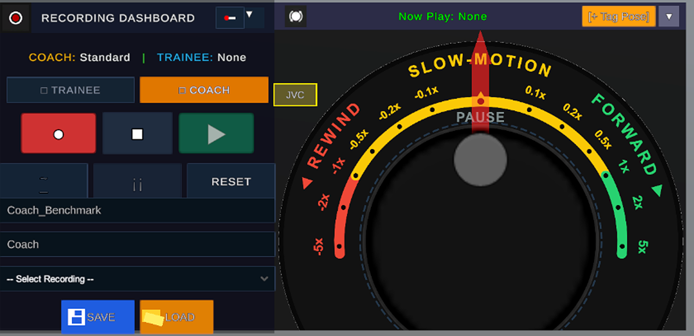

RECORDING
JVC TACTICAL TRANSPORT • DUAL-TRACK
Control at the speed of thought.
A dedicated recording dashboard built for simultaneous Coach and Trainee tracking, paired with a virtual JVC Jog-Shuttle dial for ultra-fine micro-step slow-motion analysis.

Dual-Track Role Architecture.
Whether coaching elite sprinters, martial artists, or physical therapy patients, LeSoCo separates capture data into dedicated roles:
- Coach Benchmark Track: Captures the master reference movement with pristine stability.
- Trainee Trial Track: Records live attempts against the baseline for immediate posture grading.
- Instant Target Switching: Toggle between Coach and Trainee streams with single-click activation.
Virtual JVC Jog-Shuttle Wheel.
Hardware-inspired tactile control brings broadcast-grade ergonomics directly into the digital workspace:
- Graduated Rewind Arc: Smooth deceleration through -0.1x, -0.2x, -0.5x, -1x, down to -5x high-velocity reverse.
- Zero-Latency Center Detent: Instant center freeze-frame locking for static posture inspection.
- Fluid Forward Arc: Accelerate smoothly from 0.1x micro-step forward to 5x fast review.
Transport Specifications
Jog Dial Dynamic Range
-5.0x to +5.0x Velocity
Slow-Motion Steps
0.1x • 0.2x • 0.5x Increments
Capture Pipeline
Dual-Track (Coach / Trainee)
Pose Tagging
[+ Tag Pose] Button
Session Storage
Binary .LSC Session Format